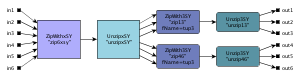

ForSyDe
Formal System Design

Quick links
Overview
Advances in microelectronics allow the integration of more and more
functionality on a single chip. Emerging system-on-a-chip architectures
include a large amount of heterogeneous components and are of
increasing complexity. Applications using these architectures require
many low-level details in order to yield an efficient implementation.
On the other hand, constant time-to-market pressure on electronic
systems demands a short design process that allows to model a system at
a high abstraction level, not taking low-level implementation details
into account. Clearly there is a significant abstraction gap between an
ideal model for specification and another one for implementation. This
abstraction gap has to be addressed by methodologies for electronic
system design.
The ForSyDe (Formal System Design) methodology has been developed with
the objective to move system design to a higher level of abstraction
and
to bridge the abstraction gap by transformational design refinement.
ForSyDe
is based on carefully selected formal foundations. The initial specification
model uses different Models of Computation, that
separate
communication from computation and have an abstract notion of time.
ForSyDe
uses the concept of process constructors to implement the
system
models, to apply design transformations and, finally, to map the resulting refined
model
onto the target architecture. The specification model is refined into a
detailed implementation model by the stepwise
application
of well-defined design transformation rules. These rules are
either
semantic preserving or they inflict a design decision modifying the
semantics.
These design decisions are used to introduce the low-level
implementation
details that are needed for an efficient implementation. The
implementation
model is mapped onto the components of the target architecture. At
present ForSyDe synchronous models can be mapped onto VHDL, allowing
external EDA tools to generate custom hardware.
Ingo Sander, Axel Jantsch, Zhonghai Lu, Tarvo Raudvere, Jun Zhu, Alfonso Acosta
ForSyDe Implementation
ForSyDe is implemented as a EDSL (Embedded Domain Specific
Language) on top of the Haskell
programming language.
Current Features
Two different sets of features are offered depending on the
signal-model used to design the system:
- Deep-embedded (ForSyDe.Signal)
Deep-embedded signals, based on the same concepts as Lava, are aware of
the system structure. Based on that structural information ForSyDe's embedded
compiler, can perform different analysis and transformations.
- Embedded compiler backends:
- Synchronous model of computation.
- Component-support.
- Shallow-embedded (ForSyDe.Shallow.Signal)
Shallow-embedded signals are modelled as streams of data
isomorphic to lists. Systems built with them are unfortunately
restricted to simulation, however, shallow-embedded signals
provide a rapid-prototyping framework with which to experiment
with new Models of Computation.
- Synchronous Computational Model.
- Data Flow Computational Model.
- Discrete Event Computational Model.
- Domain Interfaces allow building systems which use various models of computation.
-
ForSyDe package (Version 3.0, September 2008)
-
ForSyDe Standard Library (Version 2.3, April 2003)
This version is an updated version of 2.0 but it only
covers the synchronous library and domain interfaces.
-
ForSyDe Standard Library (Version 2.0,
November 2001)
Darcs repository
darcs get --partial http://www.ict.kth.se/org/ict/ecs/sam/projects/forsyde/www/darcs/
ForSyDe Tutorial
Publications on ForSyDe
- Axel Jantsch and Ingo Sander. Models of computation in the design
process. In Bashir M Al-Hashimi, editor, SoC: Next Generation
Electronics. IEE, 2005. Invited contribution; to appear.
PDF
- Tarvo Raudvere, Ashish Kumar Singh, Ingo Sander, and Axel
Jantsch. System level verification of digital signal processing
applications based on the polynomial abstraction technique. In International
Conference on Computer Aided Design (ICCAD 2005), San Jose,
California, USA, November 2005.
- Zhonghai Lu, Ingo Sander, and Axel Jantsch. Refinement of a
perfectly synchronous communication model onto Nostrum NoC best-effort
communication. In Proceedings of the Forum on Specification and
Design Languages (FDL'05), Lausanne, Switzerland, September 2005.
- Deepak Abraham Mathaikutty, Hiren Patel, Sandeep K. Shukla, and
Axel
Jantsch, "UMoC++: Modeling Environment for Heterogeneous Systems based
on Generic MoCs", Proceedings of the
Forum on Design Languages,
September 2005.
- Axel Jantsch and Ingo Sander. Models of computation and languages
for embedded system design. IEE Proceedings on Computers and
Digital Techniques, 152(2):114-129, March 2005. Special issue on
Embedded Microelectronic Systems; Invited paper.
PDF
- Axel Jantsch, "Models of Embedded Computation", Embedded Systems
Handbook, edited by Richard Zurawski, CRC Press, Invited
contribution,
2005.
- Tarvo Raudvere, Ashish Kumar Singh, Ingo Sander, and Axel
Jantsch.
Polynomial abstraction for verification of sequentially implemented
combinational circuits. In Design, Automation and Test in Europe
Conference (DATE 2004), Paris, France, February 2004.
PDF
- Ingo Sander and Axel Jantsch. System modeling and
transformational
design refinement in ForSyDe. IEEE Transactions on Computer-Aided
Design of Integrated Circuits and Systems, 23(1):17-32, January
2004.
PDF
- Tarvo Raudvere, Ingo Sander, Ashish Kumar Singh, and Axel
Jantsch.
Verification of design decisions in ForSyDe. In CODES+ISSS,
Newport Beach, California, USA, October 2003.
PDF
- Ingo Sander, Axel Jantsch, and Zhonghai Lu. Development and
application
of design transformations in ForSyDe. IEE Proceedings - Computers
& Digital Techniques, 5:313-320, September 2003.
PDF
- Axel Jantsch, Modeling
Embedded Systems and SoCs - Concurrency and Time
in Models of Computation, Morgan Kaufmann Publishers, Systems on
Silicon, June 2003.
- Ingo Sander, Axel Jantsch, and Zhonghai Lu. Development and
application
of design transformations in ForSyDe. In Design, Automation and
Test in Europe Conference (DATE 2003), Munich, Germany, March 2003.
PDF
- Ingo Sander. System Modeling and Design Refinement in
ForSyDe.
PhD thesis, Royal Institute of Technology, Stockholm, Sweden, 2003.
PDF
- Zhonghai Lu, Ingo Sander, and Axel Jantsch. A case study of
hardware
and software synthesis in ForSyDe. In Proceedings of the 15th
International Symposium on System Synthesis, Kyoto, Japan, October
2002.
PDF
- Ingo Sander and Axel Jantsch. Transformation based
communication and
clock domain refinement for system design. In Proceedings of the
39th Design Automation Conference (DAC 2002), New Orleans, USA,
June 2002.
PDF
- Ingo Sander. The ForSyDe methodology. In Swedish
System-on-Chip
Conference, March 2002.
PDF
- Tarvo Raudvere, Ingo Sander, Ashish Kumar Singh, Dilian
Gurov, and Axel
Jantsch. The ForSyDe semantics. In Swedish System-on-Chip Conference,
Falkenberg, Sweden, March 2002.
PDF
- Axel Jantsch, Ingo Sander, and Wenbiao Wu. The usage of
stochastic
processes in embedded system specifications. In Proceedings of the
Ninth International Symposium on Hardware/Software Codesign, April
2001.
PDF
- W. Wu, I. Sander, and A. Jantsch. Transformational system
design based
on a formal computational model and skeletons. In Proc. of Forum on
Design Languages 2000 (FDL' 2000), pages 321-328, Tübingen,
Germany, September 2000.
PDF
- Ingo Sander and Axel Jantsch. System synthesis utilizing a
layered
functional model. In Proceedings Seventh International Workshop on
Hardware/Software Codesign, pages 136-140, Rome, Italy, May 1999.
ACM Press.
PDF
- Ingo Sander and Axel Jantsch. System synthesis based on a
formal
computational model and skeletons. In Proceedings IEEE Workshop on
VLSI'99, pages 32-39, Orlando, Florida, April 1999. IEEE Computer
Society.
PDF
- Ingo Sander and Axel Jantsch. Formal system design based on
the
synchrony hypothesis. In Proceedings of the 12th international
conference on VLSI Design, pages 318-323, Goa, India, January 1999.
IEEE Computer Society.
PDF